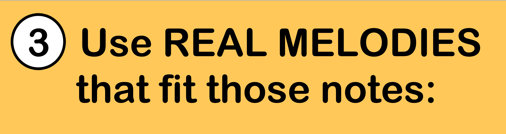
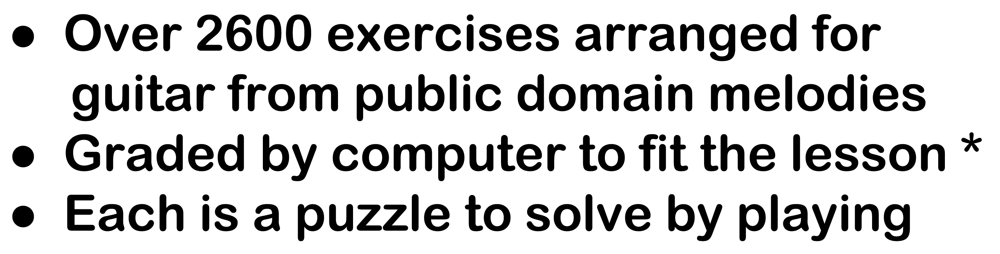
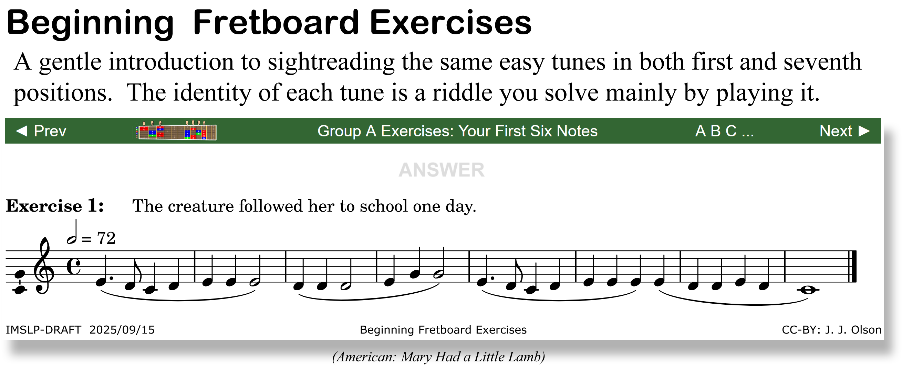
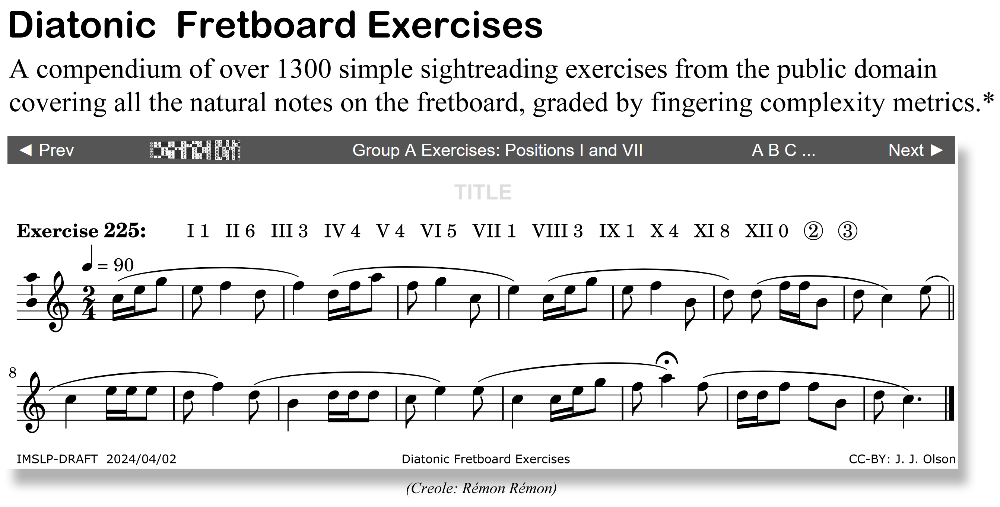
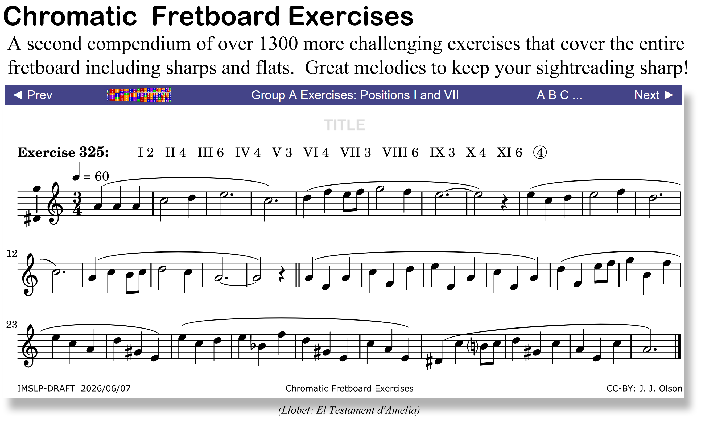
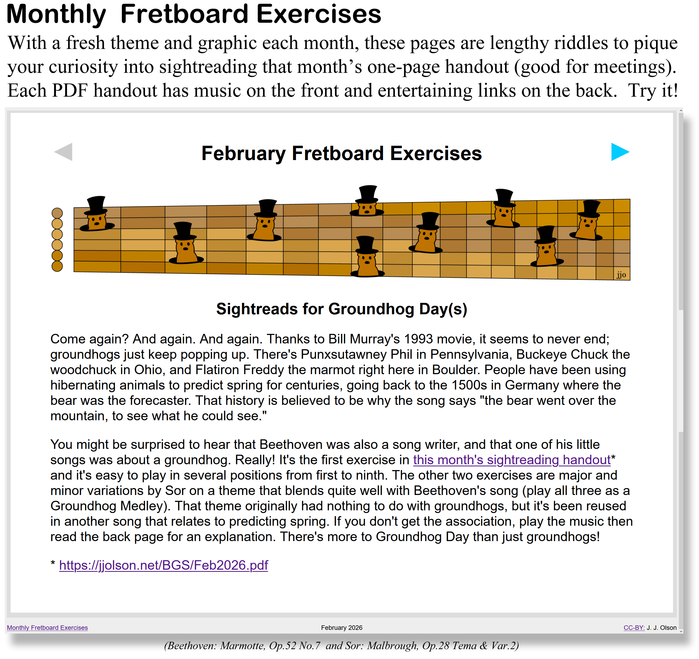

The third step is to exercise the mental mappings made in the first two steps by playing real, historical melodies that fit the range of notes being learned. Unlike computer generated exercises or even those written specifically for sightreading, these exercises represent the contributions of a thousand musical minds over the centuries. They are part of our cultural literacy as musicians and members of society. Students will learn more than just sightreading from these sightreads.


For example, the little Beginning book starts with melodies that use the first six notes learned in Step 2. Each tune's identity has a cryptic hint to make it fun. Mousing over the grayed ANSWER reveals the title, and clicking it shows enough of the lyrics to explain the hint and perhaps a link to Wikipedia or Youtube.

In the large Diatonic book, the hints are replaced by complexity metrics to encourage playing in alternative positions. Roman numerals are the playable positions for that exercise and the single digits are complexity scores (0=easiest to 9=hardest). A circled number means it can be played entirely on just that string. Mouse-over or click TITLE to see what it is.

The equally large Chromatic book is for music lovers. Its surprising melodic reductions of great guitar pieces and even symphonies will definitely put color back into your sightreading.

These have new stories and artwork each month, usually with something surprising. Like in the example below, did you know Beethoven wrote a little song about a groundhog, with lyrics by Goethe? And that it pairs well with two pieces by Sor (play them as a Groundhog Medley)? Or that Groundhog Day is a "cross-quarter" day, midway between solstice and equinox? And there are old holidays on the other cross-quarter days, too? Read the music!

* Follow Next► to see how all these exercises were easily graded by computer.